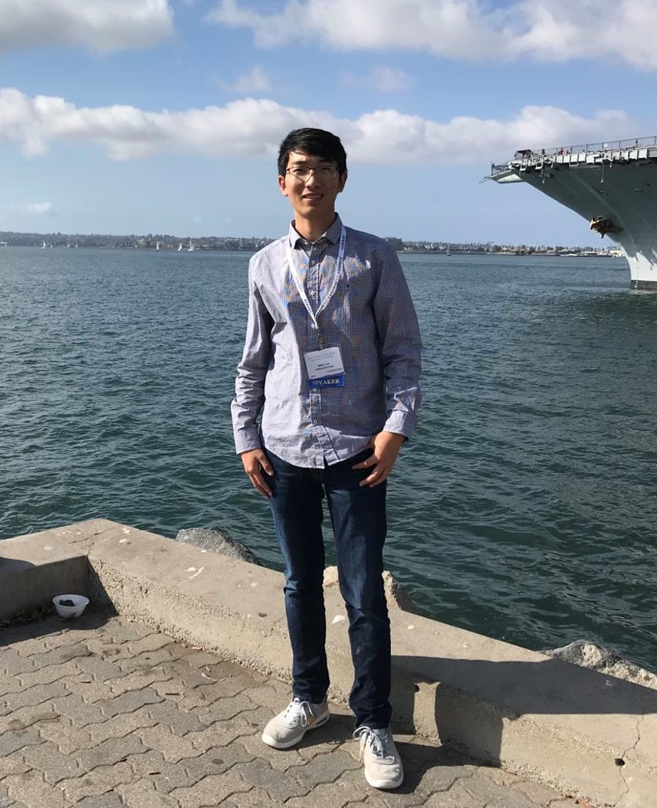

Qian Lou

Bio
Qian Lou is a researcher and professor at the University of Central Florida, serving as Principal Investigator on projects supported by NSF, NIH, and Amazon. His research connects model innovation, collaborative intelligence, and security to build capable, efficient, and trustworthy AI agents. He studies how models and agents coordinate, use memory, and allocate computation, and how their interactions can remain reliable under resource constraints and security risks. His NIH-supported research brings these questions into knowledge-grounded healthcare decision support.
He received the NSF CAREER Award in 2026. His work appears in leading AI, security, and systems venues, including NeurIPS, ICML, ICLR, ACL, IEEE S&P, and DAC. Before joining UCF, he was a Senior Research Scientist at Samsung AI Center in Mountain View. His work has received a Samsung Research Best Paper Award and Best Paper Finalist honors at PACT and ICCAD.
Research
How can AI agents combine specialized capabilities into collective intelligence that is efficient, reliable, and secure?
Driven by this question, my research aims to unlock the complementary strengths of models, knowledge, and tools so that AI agents can tackle complex tasks beyond the capabilities of individual models. By making collaboration more effective, affordable, and trustworthy, we aim to expand AI's capabilities, scale its deployment, and enable new applications in healthcare and scientific discovery.
We pursue this goal through three connected foundations: Capable and efficient models, Collaborative intelligence, and Trustworthy collaboration. We develop model architectures and compression methods that provide efficient building blocks for agents; routing, memory, orchestration, and simulation methods that coordinate models and allocate computation; and attack analysis, evaluation, privacy, and verification mechanisms that address risks in agent interactions and outputs. Our NIH-supported healthcare research brings these foundations together through knowledge-grounded collaborative agents for clinical decision support.
I. Capable and efficient models
We develop architectures and compression methods that make model capabilities more affordable and reusable. These model-level foundations support our broader goal of composing specialized capabilities without requiring every agent to use a large, general-purpose model.
- Shared representations. DictFormer (ICLR 2022) uses a shared dictionary to build a compact Transformer architecture. [Paper]
- Efficient specialization. Our weighted low-rank language model compression work (ICLR 2022) reduces model size while accounting for the importance of model parameters. [Paper]
II. Collaborative intelligence
We turn individual capabilities into coordinated computation by deciding which models and agents participate, what information they retain, and how much computation they receive. Our approaches connect routing, memory, and workflow design with serving conditions, while simulation supports the search for better collaboration policies.
- Choosing models and reasoning budgets. R2-Router (ICML 2026) jointly selects a model and an output-length budget, enabling more flexible quality-cost tradeoffs. [Paper]
- Memory and coordination. Our gated-memory routing work (EMNLP 2026) studies which information to retain for efficient multi-agent collaboration. Learning Latency-Aware Orchestration (NeurIPS 2026) studies workflows that reduce unnecessary interactions and execution delays. [Memory publication] [Orchestration publication]
- Infrastructure-aware collaboration. INFRAMIND connects planning, model selection, and scheduling to runtime serving conditions. [Preprint]
- Simulation and policy search. AgentServeSim provides serving-system simulation and policy search for LLM agent programs, supporting the study of execution strategies before deployment. [Preprint]
III. Trustworthy collaboration
We study how collaboration can fail and develop safeguards for agent interactions, information, and computation. Attack analysis exposes vulnerabilities in memory and communication; evaluation examines output quality; and privacy and verification mechanisms protect sensitive computation and check supported results. These approaches address distinct risks rather than providing a single end-to-end guarantee.
- Adversarial memory and interaction. MemIncept (ICML 2026) investigates memory injections into LLM agents; our conjunctive prompt attack work (ACL 2026, Main Conference Oral) examines security risks in multi-agent systems. [Memory attacks] [Prompt attacks]
- Evaluation of clinical text. Our EMNLP 2025 and 2026 studies examine factuality, watermark detectability, style shifts, and helpfulness in medical text, informing how we evaluate information used or produced by agents. [Factuality study] [Clinical EHR study]
- Privacy and verification. SecureRoute (DAC 2026) protects model routing and inference, while DataSeal (IEEE S&P 2025) checks supported encrypted computations. FHE-Coder (ICLR 2026) illustrates how programming agents can use external functional and security checks. [SecureRoute] [DataSeal] [FHE-Coder]
Healthcare: An Integrating Application
Our NIH/NIAID R01 supports research on knowledge-grounded collaborative AI agents for bacterial infection decision support. This application connects capable and efficient models with clinical knowledge, collaborative intelligence with evidence and task coordination, and trustworthy collaboration with evaluation of reliability, privacy, and safety.
Ongoing research and intended impact. We aim to help clinicians use relevant evidence and clinical practice guidelines through coordinated AI assistance. Clinical requirements and evaluation will, in turn, guide improvements to our models, collaboration methods, and safeguards. These are funded research objectives, not demonstrated clinical benefits; clinical validation and clinician oversight remain essential. [Project and funding]
Selected Publications
* indicates students and staff under my supervision. Earlier model and secure-computing papers provide foundations for this agenda. Complete publication list.
[NeurIPS 26] Chain-of-Route: State-Aware LLM Routing for Multi-Turn Conversations |
[NeurIPS 26] Learning Latency-Aware Orchestration for Multi-Agent Systems |
[EMNLP 26] Learning What to Retain: Gated-Memory Routing for Efficient Collaboration in Multi-Agent LLM Systems |
[EMNLP 26] Evaluating LLM Watermarking for Clinical EHR: Detectability, Style Shifts, and Helpfulness |
[ICML 26] MemIncept: Steering LLM Agents via Cooperative Stealthy Memory Injections |
[ICML 26] R2-Router: A New Paradigm for LLM Routing with Reasoning |
[ACL 26] Conjunctive Prompt Attacks in Multi-Agent LLM Systems |
[DAC 26] SecureRoute: Input-Adaptive Encrypted Routing for Efficient and Accurate MPC-Based Transformer Inference |
[ICLR 26] FHE-Coder: Secure Agentic Code Generation for Fully Homomorphic Encryption |
[EMNLP 25] Factuality Beyond Coherence: Evaluating LLM Watermarking Methods for Medical Texts |
[S&P 25] DataSeal: Ensuring the Verifiability of Private Computation on Encrypted Data |
[ICLR 22] Language model compression with weighted low-rank factorization |
[ICLR 22] DictFormer: Tiny Transformer with Shared Dictionary |
Open Source
- R2-Router: reasoning-based model routing and output-budget selection.
- UCF-ML-Research: our group's efficient and trustworthy machine learning repositories.
- FHE-Coder: benchmark and project resources for cryptographic programming agents.
- UCF-Lou-Lab-PET: privacy-preserving computing and AI resources.
People
Selected student contributors span model routing, collaborative agents, evaluation, and secure programming:
- Jiaqi Xue: R2-Router and Chain-of-Route.
- Ahasan Kabir: INFRAMIND and hardware-aware model serving.
- Xi Shi: latency-aware multi-agent orchestration.
- Rakibul Hasan Rajib: gated-memory routing for multi-agent collaboration.
- Nokimul Hasan Arif: conjunctive prompt attacks in multi-agent systems.
- Rochana Prih Hastuti: clinical-text evaluation and watermarking.
- Mayank Kumar: FHE-Coder and secure agentic programming.
Funding & Recognition
Support across my research program spans AI systems, healthcare AI, secure computing, and workforce development. The NIH project directly supports the healthcare direction described above; other awards support complementary research and education.
Research & Education Funding
PI: Principal Investigator. Co-PI: Co-Principal Investigator.
- 2026Amazon Research Award (PI)
Trainium-native controller-guided compression and alignment-preserving post-training.
$250K in AWS credits. [Program] - 2026NIH/NIAID R01 (PI)
Collaborative AI Agents for Bacterial Infections: A Knowledge-Grounded Framework to Support Clinical Practice Guidelines and Clinical Decision-Making. [Program]
- 2026NSF CyberAI Scholarship for Service (SFS) (Co-PI)
CyberAI SFS: Educating Florida's Federal CyberAI Workforce for Secure AI in Space, Defense, and Modeling & Simulation. [Award 2622846]
- 2026NSF CAREER (PI)
Scalable, General-Purpose, and Automated Secure Computing for AI Infrastructure. [Award OAC-2544047]
- 2026NSF Research Experiences for Undergraduates (REU)
Support for undergraduate research experiences. [Program]
- 2025NSF Secure and Trustworthy Cyberspace (SaTC) (PI)
Collaborative Research: Privacy-Preserving Synthetic Data Generation. [Award CCF-2523407]
- 2025Department of Defense Pathfinder Program (PI)
LLM Security Testing.
- 2024NSF CISE Core / CSR Small (PI)
System Support for Fast, Scalable, and Verifiable Fully Homomorphic Encryption. [Award CNS-2413232]
- 2024Arctic Wolf Networks, Inc. (Co-PI)
Industry research support.
Honors & Recognition
- 2026: NSF CAREER Award. [UCF feature]
- 2026: ASEM-FL Rising Star Award. [Program]
- 2022: Samsung Research Best Paper Award.
- 2020: Best Paper Finalist, PACT.
- 2018: Best Paper Finalist, ICCAD.
Selected Service & Outreach
- Area Chair: NeurIPS, ICLR, and ACL.
- DAC 2026 SPGAI Workshop Chair. Secure and Private System Design for Generative & Agentic AI. [Workshop]
- WESH 2 News interview. Public discussion of AI safety. [Interview]